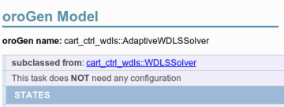

Validating Configuration Consistency
This is a more advanced topic. As it touches system-wide consistency, and configuration validation concerns, it is important. However, you may also want to skip it and come back here later.
In the Deployment page, we have passed the control chain's
tip and root parameters through the config/orogen/ files, and the SDF model
through Syskit. In a complex system, there is a lot of such "spread out"
configurations. Ensuring that everything is centralized is not always possible
- or even desirable. One goal of a system like Syskit is to provide the
environment to ensure that all these parameters are consistent with each other
regardless.
We will have a glimpse at this now by verifying that the links that are in the
tip and root parameters are actual links from the SDF model. This is done by
checking the parameters in the task's #configure method. None of the
implementation is Syskit-specific. Only the testing environment is.
Now, to ensure consistency, we should verify that the tip and root
properties are set to actual links in the provided model. Let's do this in
WDLSSolver:
argument :robot
# @api private
#
# Validates that a link is part of the provided robot model
#
# @param [String] link_name the name of the link
# @param [String] property_name the name of the property being
# verified
# @raise [ArgumentError] if the link is not in the model
def verify_link_in_model(model, link_name)
if !model.each_link.any? { |link| link.full_name == link_name }
raise ArgumentError, "link name '#{link_name}' is not a link of the robot model. Existing links: #{model.each_link.map(&:full_name).sort.join(", ")}"
end
end
def configure
super
# Extract the model into its own SDF document
as_root = robot.sdf_model.make_root
# And get the new model
model = as_root.each_model.first
verify_link_in_model(model, properties.root)
verify_link_in_model(model, properties.tip)
properties.robot_model = as_root.to_xml_string
properties.robot_model_format = :ROBOT_MODEL_SDF
end
Advanced Writing helpers in Syskit apps
The verify_link_in_model functionality is obviously a good target for
being factored out as a standalone helper. In Syskit apps, these helpers
are stored within the lib/<app_name>/ folder (e.g. lib/syskit_basics/).
Corresponding tests are stored in test/lib/.
In this case, one would create a lib/syskit_basics/sdf_helpers.rb file with a SyskitBasics::SDFHelpers module that contains
# Validates that a link is part of the provided robot model
#
# @param [SDF::Model] sdf_model the SDF model
# @param [String] link_name the name of the link
# @raise [ArgumentError] if the link is not in the model
def self.verify_link_in_model(sdf_model, link_name)
if !sdf_model.each_link.any? { |link| link.name == link_name }
raise ArgumentError, "link name '#{link_name}' is not a link of the robot model. Existing links: #{sdf_model.each_link.map(&:name).sort.join(", ")}"
end
end
As for the constant generator, we should test the
functionality. The syskit gen orogen call
created a test template. Let's modify it to test the setup for WDLSSolver.
The modifications for SingleChainPublisher will be left to the reader :P
describe cart_ctrl_wdls.WDLSSolver do
attr_reader :profile
before do
# Create a mock that has a robot model
xml = <<-EOSDF
<model name='test'>
<link name="root_test" />
<link name="tip_test" />
</model>
EOSDF
# We don't really need a full profile object, only an object
# that provides a Model object from a '#sdf_model' attribute
#
# Let's fake one using flexmock. Flexmock is loaded as part
# Of Syskit's test harness
#
# https://github.com/doudou/flexmock
@profile = flexmock(sdf_model: SDF::Model.from_xml_string(xml))
end
it "sets the robot model from its 'robot' argument" do
# Create a fake test configuration with valid root and tip
syskit_stub_conf OroGen.cart_ctrl_wdls.WDLSSolver, 'default',
data: { 'root' => 'test::root_test', 'tip' => 'test::tip_test' }
task = syskit_stub_deploy_and_configure(
OroGen.cart_ctrl_wdls.WDLSSolver.
with_arguments(robot: profile))
assert_equal "<sdf>#{profile.sdf_model.to_xml_string}</sdf>",
task.properties.robot_model
end
it "raises if the root link does not exist" do
syskit_stub_conf OroGen.cart_ctrl_wdls.WDLSSolver, 'default',
data: { 'root' => 'invalid', 'tip' => 'test::tip_test' }
e = assert_raises(ArgumentError) do
syskit_stub_deploy_and_configure(
OroGen.cart_ctrl_wdls.WDLSSolver.
with_arguments(robot: profile))
end
assert_equal "link name 'invalid' is not a link of the robot model. "\
"Existing links: test::root_test, test::tip_test",
e.message
end
it "raises if the tip link does not exist" do
syskit_stub_conf OroGen.cart_ctrl_wdls.WDLSSolver, 'default',
data: { 'root' => 'test::root_test', 'tip' => 'invalid' }
e = assert_raises(ArgumentError) do
syskit_stub_deploy_and_configure(
OroGen.cart_ctrl_wdls.WDLSSolver.
with_arguments(robot: profile))
end
assert_equal "link name 'invalid' is not a link of the robot model. "\
"Existing links: test::root_test, test::tip_test",
e.message
end
end
And run the tests either on the command line or with the IDE.
The tests for WDLSSolver we just wrote should pass. However, we get an
error for AdaptiveWDLSSolver:
1) Error:
OroGen::CartCtrlWdls::AdaptiveWDLSSolver#test_0001_anonymous:
cannot find an ordering to configure 1 tasks
OroGen::CartCtrlWdls::AdaptiveWDLSSolver:0x5e5bbb8
owners:
arguments:
orocos_name: "task_under_test",
conf: ["default"]
ready_for_setup? false
missing_arguments: robot
has no should_configure_after constraint
/home/doudou/dev/vanilla/rock-website/tools/syskit/lib/syskit/test/network_manipulation.rb:788:in `syskit_configure'
/home/doudou/dev/vanilla/rock-website/tools/syskit/lib/syskit/test/network_manipulation.rb:1023:in `syskit_deploy_and_configure'
/home/doudou/dev/vanilla/rock-website/tools/syskit/lib/syskit/test/task_context_test.rb:63:in `assert_is_configurable'
/home/doudou/dev/vanilla/rock-website/tools/syskit/lib/syskit/test/task_context_test.rb:75:in `is_configurable'
/home/doudou/dev/vanilla/rock-website/bundles/syskit_basics/test/orogen/test_cart_ctrl_wdls.rb:55:in `block (2 levels) in <module:CartCtrlWdls>'
With the missing_arguments: line
we have already seen.
Looking at AdaptiveWDLSSolver, we can see that it is subclassing WDLSSolver:

This is reflected in the class hierarchy on the Syskit side, which means that
AdaptiveWDLSSolver does inherit the configure method we just wrote. Given
that it does not overload this method itself, we can just delete the test.
Finally, we should run the whole test suite to verify we haven't broken anything:
syskit test -rgazebo
Which does generate errors in the compositions. The generated composition files
test for configuration (which is usually where there is code). Let's adapt those
to make sure they run. We basically need to provide a proper robot model and
configurations for the SingleChainPublisher and WDLSSolver components, based
on what we've already done for these two components.
Solution Fix the composition tests
Let's fix the test for ArmCartesianControlWdls first. We basically need to
setup the 'default' configuration for the two components, and a proper robot
model. Let's do it in the test's before block:
before do
# Create a mock that has a robot model
xml = <<-EOSDF
<model name='test'>
<link name="root_test" />
<link name="tip_test" />
</model>
EOSDF
@profile = flexmock(sdf_model: SDF::Model.from_xml_string(xml))
syskit_stub_conf OroGen.cart_ctrl_wdls.WDLSSolver, 'default',
data: { 'root' => 'test::root_test', 'tip' => 'test::tip_test' }
syskit_stub_conf OroGen.robot_frames.SingleChainPublisher, 'default',
data: { 'chain' => Hash['root_link' => 'test::root_test', 'tip_link' => 'test::tip_test'] }
end
and modify the test to pass the robot model
cmp_task = syskit_stub_deploy_configure_and_start(
ArmCartesianControlWdls.with_arguments(robot: @profile))
Do the same modification for the ArmCartesianConstantControlWdls composition and now
verify that the tests pass with syskit test -rgazebo.